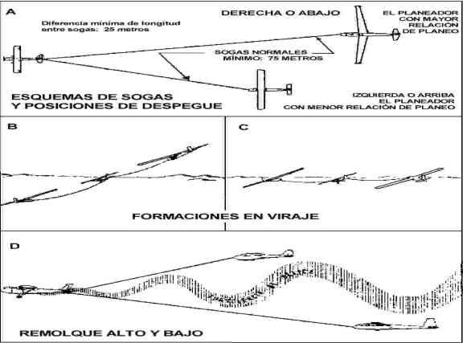

CURSO TEÓRICO
DE
PILOTO DE PLANEADOR
[ Arriba ] [ 1ª Sección ] [ 2ª Sección ] [ 3ª Sección ] [ 4ª Sección ] [ 5ª Sección ] [ 6ª Sección ] [ 7ª Sección ] [ 8ª Sección ] [ 9ª Sección ] [ 10ª Sección ] [ 11ª Sección ] [ 12ª Sección ] [ 13ª Sección ] [ 14ª Sección ] [ 15ª Sección ]
14ª Sección: REMOLQUE DOBLE, TÉCNICAS, VIRAJES, POSICIONES, DESPRENDIMIENTO; FALLAS EN EL SISTEMA DE DESPRENDIMIENTO DEL PLANEADOR, AVIÓN Y AMBOS.
REMOLQUE DOBLE
Con un
adecuado margen de potencia en el avión, no resulta dificultoso remolcar dos planeadores
a un tiempo, contando con personal experimentado. Este tipo de operación resulta más
económico en vuelos de navegación, búsquedas o concursos.
Exige, por supuesto, dos líneas o sogas de por lo menos
75 m. (250 pies) la más corta y de 100 m. (330 pies) la restante.
En ningún caso la diferencia en longitud de ambas sogas
será menor de 25m. (75 pies).
La primera será empleada por el planeador que vuele a la
izquierda, en posición alta y posea la menor relación de planeo, mientras que la más
larga la utilizará el restante, que tendrá mayor performance -mejor relación de
planeo-y volará en posición baja. (Fig. Nº 9 A).
Antes del despegue los tres pilotos discutirán
exhaustivamente la acción individual de cada uno durante el vuelo, cubriendo en detalle
los procedimientos para casos de emergencia.
Nota:
En turbulencia de moderada a fuerte el remolque doble es
peligroso y no debe realizarse. Si estas condiciones se presentaran en vuelo, el mismo
finalizará en el aeródromo de alternativa más cercano.
TECNICA PARA REMOLQUES DOBLES
El
despegue es similar al simple en todos los aspectos, excepto que cada planeador mantendrá
con precisión su eje longitudinal justamente afuera de las puntas de ala del avión
remolcador.
Será preciso una pista con un ancho adecuado y se
preverá una mayor carrera en tierra durante la operación.
VIRAJES EN REMOLQUES DOBLES
Con los
planeadores en posición normal o de remolque alto, únicamente se realizarán giros
suaves. 
La diferencia en velocidad durante virajes escarpados con
ambas aeronaves en remolque alto, puede ser de un 7 a un 8 % sobre la del avión, para la
que vuela en el lado externo del giro y del mismo valor para la que lo hace en el lado
interno. Estas diferencias pueden ocasionar dificultades para mantener la posición de
remolque adecuada.
Figura Nº 9 –
Remolque doble
Existen dos métodos para los giros en remolques
dobles. En el primero, mostrado en la figura número 9 B los planeadores mantienen la
misma posición respecto a las puntas de ala que en remolque nivelado; volando el interior
más bajo y el restante alto; ambos fuera de la trayectoria curva del chorro de la hélice
y los vórtices marginales. Quienes tengan experiencia de vuelo en formación lo
preferirán, dado que las tres máquinas mantienen una posición similar a la de aviones
en ese tipo de vuelo.
En el otro método (figura Nº 9 C) ambos planeadores
mantienen el mismo nivel adoptando cada piloto un nuevo punto de referencia sobre su lado
del avión.
POSICIONES DE REMOLQUE ALTA Y BAJA
Para mayor
precisión en la conservación de la posición de remolque con una mayor eficiencia y la
consiguiente reducción de la fatiga en los pilotos (debido a las presiones continuas a
ejercer sobre los alerones y timón de dirección), el remolque doble debe hacerse con un
planeador en posición alta y el restante en baja, evitando el chorro de la hélice y los
vórtices marginales.
La razón para colocar a la aeronave más eficiente en
posición baja con la soga más larga, es ahora evidente; habrá menos tendencia a la oscilación en estas condiciones.
Ambas posiciones -alta y baja-, se adoptarán arriba de
los 300 m. (1.000 pies) de altura, después de abandonar el circuito de tránsito. El
planeador con la línea más larga se moverá por afuera de la zona del chorro de la
hélice y los vórtices marginales, en el sentido de las agujas del reloj hasta entrar en
la posición de remolque bajo; el restante lo hará en el mismo sentido y hacia arriba
hasta llegar a la de remolque alto normal, también por fuera de la zona de turbulencia
expresada.
La primer aeronave, cuya soga es más vulnerable, podrá
entonces ver a las restantes desde una posición cómoda (figura Nº 9 D).
Nota:
Es conveniente -durante este tipo de operación- atar
pequeñas piezas de tela sobre la soga a intervalos de 6 a 9 metros (20 ó 30 pies) para
hacer más fácil a los pilotos distinguirla.
DESPRENDIMIENTO
Se
efectuará en forma similar al empleado para remolque simple.
El planeador con la línea más corta, sobre el lado
izquierdo, siempre desprenderá primero iniciando de inmediato un viraje en ascenso a la
izquierda; el restante desprenderá a continuación virando también en ascenso pero a la
derecha.
El avión continuará recto hacia adelante hasta despejar
la zona.
FALLA EN EL SISTEMA DE DESPRENDIMIENTO DEL PLANEADOR
Si fuera
imposible efectuar el desprendimiento, el piloto del planeador se colocará dentro del
alcance visual del avión inclinando en uno y otro sentido las alas de su aeronave,
señalando al mismo tiempo hacia la nariz de su máquina.
Cuando el piloto remolcador parezca haber entendido las
señales, el planeador se colocará en posición de remolque alto, procediendo entonces el
primero a regresar al aeródromo de salida, sobre la vertical del cual accionará su
mecanismo de desprendimiento.
Si el sistema automático funciona, la soga se
desprenderá del planeador por sí misma; de no ocurrir así no habrá otro medio que
realizar el aterrizaje con ella conectada. En este caso la aproximación se hará con una
altura ligeramente mayor al largo de ésta y en un sector del aeródromo donde no haya
obstrucciones que posibiliten su enganche en las mismas.
FALLA EN EL SISTEMA DE DESPRENDIMIENTO
DE AMBAS AERONAVES
Si fuera imposible para ambas aeronaves desprenderse de la soga, el piloto del avión
lo señalará al del planeador accionando en ambos sentidos los alerones.
Seguidamente iniciará un suave descenso ejecutando un
amplio circuito, cuidando que no se produzca un aumento de la velocidad vertical,
manteniéndose dentro de las velocidades de remolque.
No proceder así ocasionará que el planeador sobrepase al avión con los consiguientes
problemas.
En la aproximación final el primero se colocará en
posición de remolque bajo, preparándose para aterrizar primero en el costado derecho de
la pista, cuidando de mantenerse debajo del chorro de la hélice y los vórtices
marginales.
El avión, por su parte, proseguirá su aproximación con
potencia moderada -ligeramente menor que la necesaria para remolque nivelado-, cuidando de
no descender tanto que obligue al planeador a ascender para esquivar los obstáculos
perimetrales.
Por su parte, este último mantendrá tensa la soga
empleando spoilers, frenos de picada, deslizamientos en avance o una combinación de todos
los expresados.
Logrado el contacto con el terreno no aplicará los frenos
bruscamente puesto que de hacerlo producirá una carga hacia abajo al avión, justamente
antes que éste complete a su vez el aterrizaje que realizará con potencia y sobre ruedas
en el costado izquierdo de la pista, reduciendo gradualmente -ya en tierra- la potencia.
Tampoco empleará -a menos que sea absolutamente necesario- los frenos, recordando que
detrás suyo continúa prendida la otra aeronave.
Volver Arriba